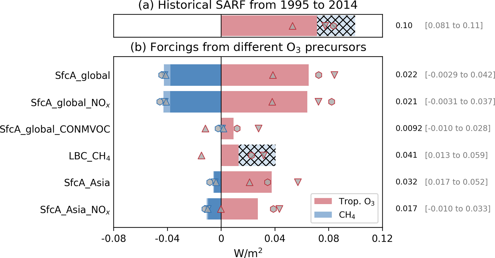

Climate impacts of tropospheric ozone
Tropospheric ozone is a greenhouse gas, and the emissions that produce it also change methane's lifetime through the hydroxyl radical. I quantify the radiative forcing from ozone changes, ask how air-quality policies have altered it, and study how the climate system responds.

Ozone and methane forcing from precursor emissions
Tropospheric ozone changes from 1995 to 2014 produced a forcing of about 0.10 W m⁻². Surface anthropogenic NOx emissions drove much of it, but the same emissions boost the hydroxyl radical and shorten methane's lifetime, so part of their positive ozone forcing is offset by a negative methane forcing. Accounting for each precursor separately matters for climate policy.
Forcing avoided by air pollution controls
With Stephanie Elkins and colleagues, we estimate how much tropospheric ozone radiative forcing US air pollution controls have avoided, linking air-quality policy to its climate co-benefits.
Ongoing: climate responses to ozone changes
Forcing is only the first step. My current work examines how the climate system responds to tropospheric ozone changes from preindustrial times to the present day, which I will present at AGU in December 2026.